Pesci piccoli
Specie: Perca di Scoglio Piccolo · Perca Gialla Piccolo · Pesce Gatto Nebuloso Piccolo · Pickerel Piccolo · Pickerel Rosso Piccolo · Salmone Rosso Piccolo
Esche consigliate: Esca per Pesci Piccoli · Grilli · Libellula
Specie d’acqua dolce, mappe delle zone di pesca, canne, trappole e ricette utili ai pescatori.
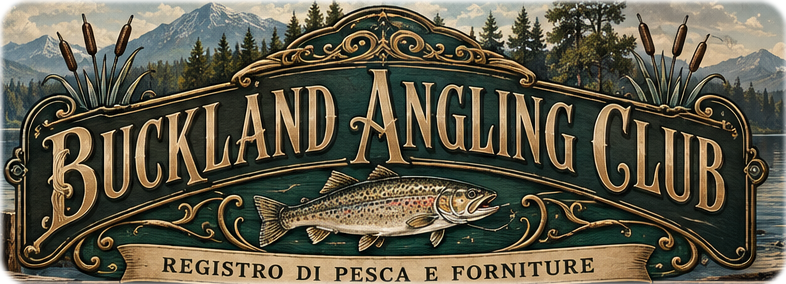
Specie: Perca di Scoglio Piccolo · Perca Gialla Piccolo · Pesce Gatto Nebuloso Piccolo · Pickerel Piccolo · Pickerel Rosso Piccolo · Salmone Rosso Piccolo
Specie: Perca di Scoglio Medio · Perca Gialla Medio · Pesce Gatto Nebuloso Medio · Pickerel Medio · Pickerel Rosso Medio · Salmone Rosso Medio · Persico Trota Dolomeu Medio · Trota Iridea Media · Boccalone Medio
Specie: Luccio dal naso lungo (Northern Pike) · Pescegatto Grande · Pesce Storione
Le catture speciali del Buckland Angling Club. Per ciascun pesce sono indicati esca richiesta e luogo.
Mappe delle zone di pesca: seleziona una specie per visualizzare le aree consigliate. Le zone rosse indicano i punti migliori sulla mappa.
Categoria: Pesce piccolo
Le aree rosse mostrano i punti consigliati per trovare la specie selezionata.
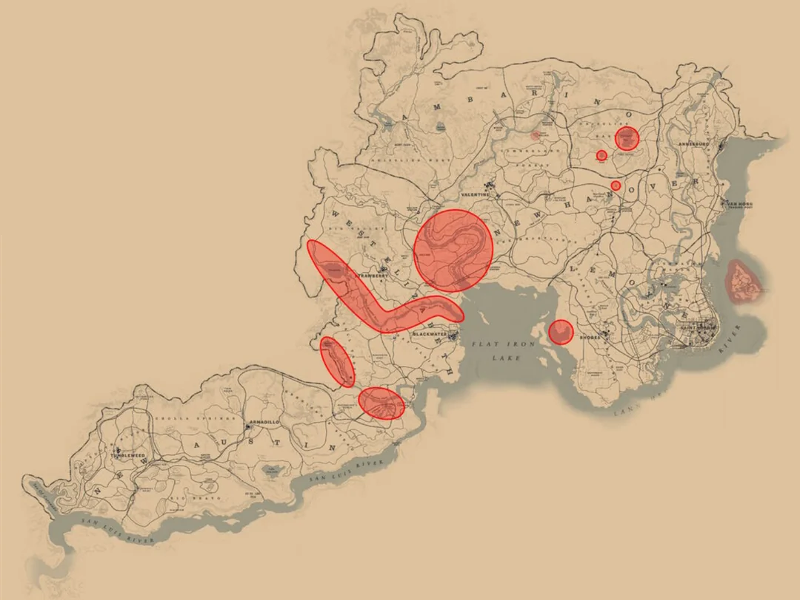
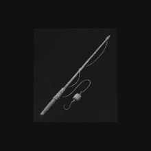
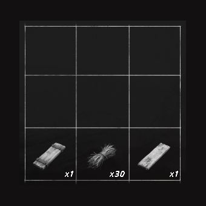
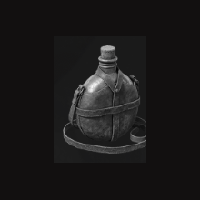
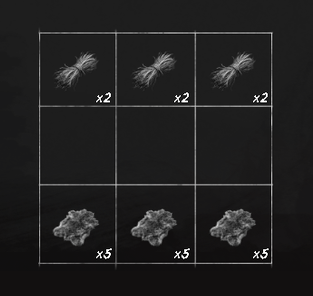
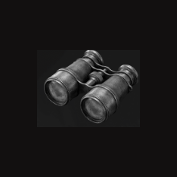
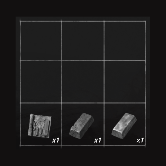
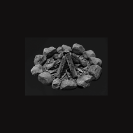
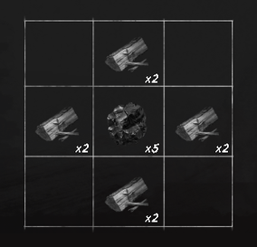
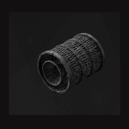
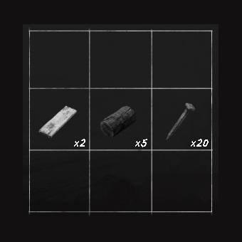
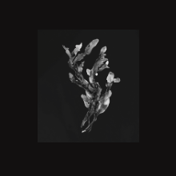
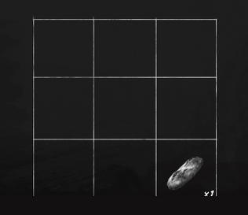
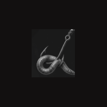
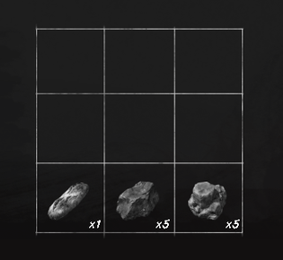
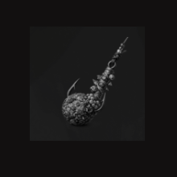
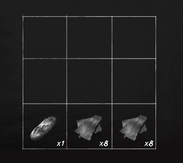
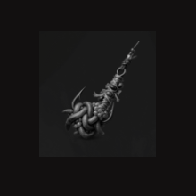
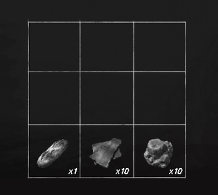
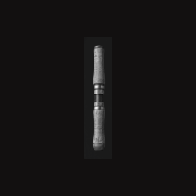
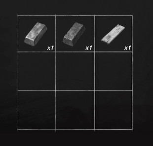
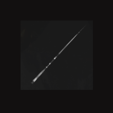
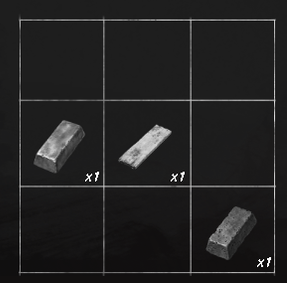
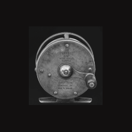
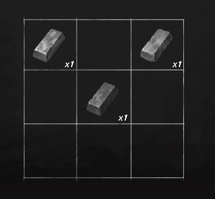
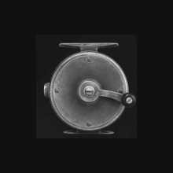
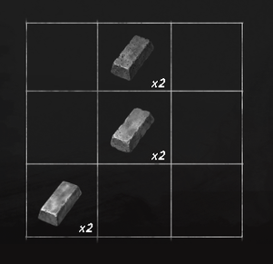
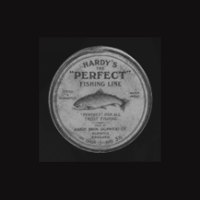
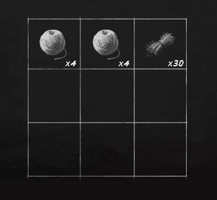
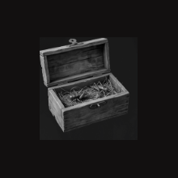
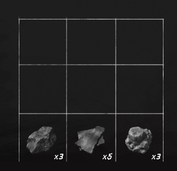
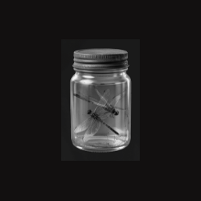
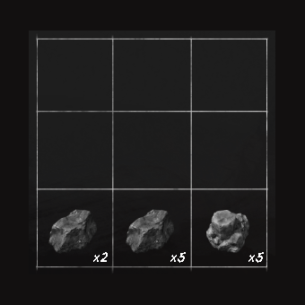
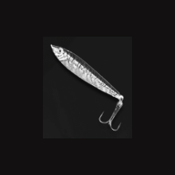
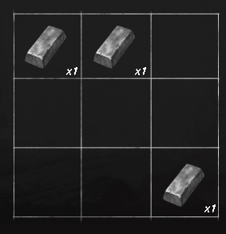
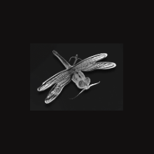
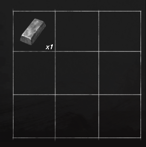
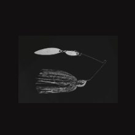
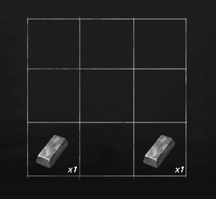
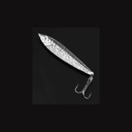
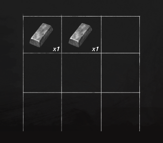
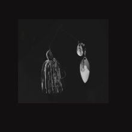
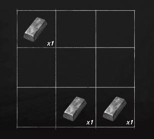
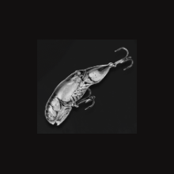
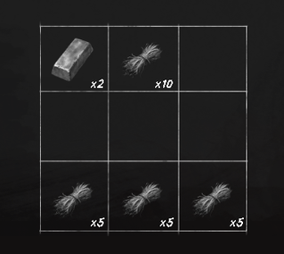